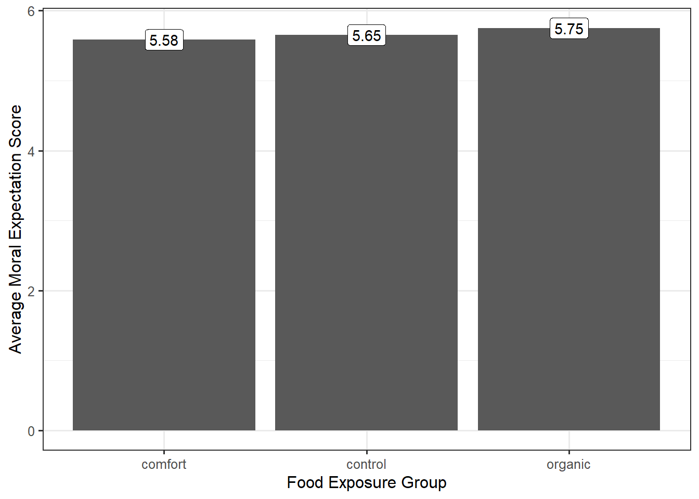
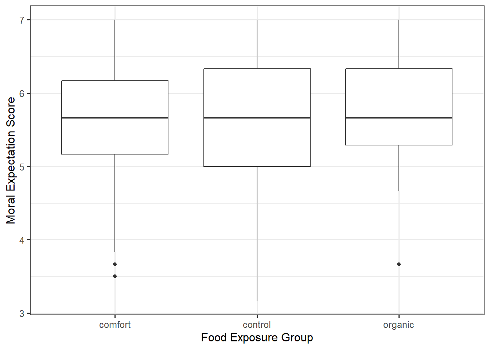
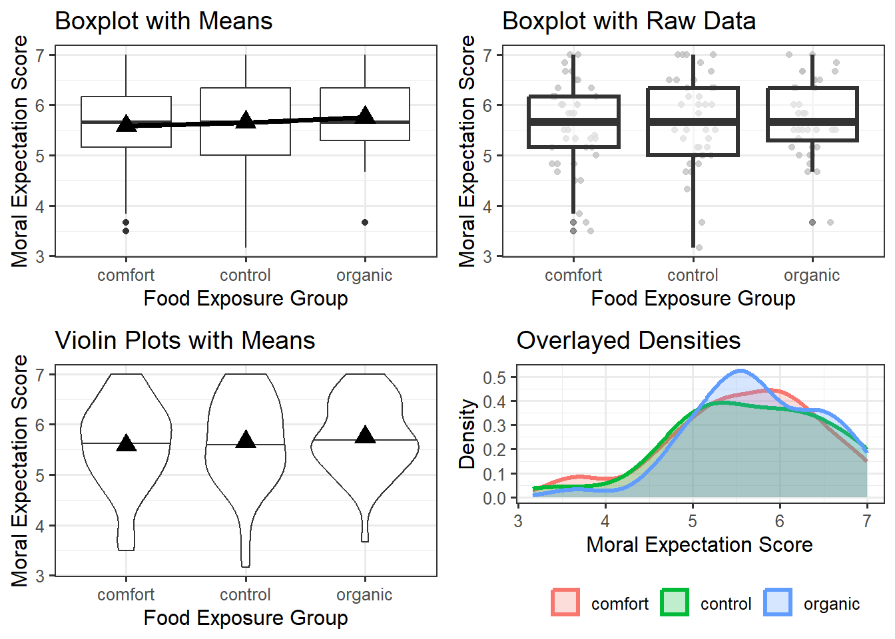

26 Presenting the Data
Chapter 19 introduced the importance of partitioning sources of variability in the response. This theme impacts both the manner in which we summarize data and the analysis we conduct. We keep this idea in mind as we also construct graphical and numerical summaries which address our research objective.
We have already argued that variability makes addressing questions difficult. If every subject in the Organic Food Case Study had the same moral expectation when exposed to the same food type, there would be no need for statistics. We would simply evaluate one subject and determine which treatment to give. Statistics exists because of the ambiguity created by variability in the responses. As a result of this variability, our statistical graphics (and later our model for the data generating process) must distinguish the various sources of variability. That is, with any analysis, we try to answer the question “why aren’t all the values the same? What are the reasons for the difference we are observing?”
From the Organic Food Case Study, consider the primary question of interest:
Is there evidence of a relationship between the type of food a person is exposed to and their moral expectations, on average, following exposure?
We are really asking “does the food exposure help explain the differences in the moral expectations of individuals?” We know that there are differences in moral expectations between individuals. But, are these differences solely due to natural variability (some people are just inherently, possibly due to how they were raised, more or less strict in terms of their moral beliefs); or, is there some systematic component that explains at least a portion of the differences between individuals?
A good graphic must then tease out how much of the difference in the moral expectations is from subject-to-subject variability and how much is due to the food exposure. When our response and predictor were both quantitative, a scatterplot was appropriate (Chapter 16). When our response is categorical, we may turn to other options, but the goal is the same — address the research objective and tease out the various sources of variability in the response. Consider a common graphic which is not useful in this situation (Figure 26.1).
To determine an appropriate graphic, we need to remember that we want to partition the variability. So, we must not only compare the differences between the groups but also allow the viewer to get a sense of the variability within the group. A common way of doing this within engineering and scientific disciplines is to construct side-by-side boxplots, as illustrated in Figure 26.2.

From the graphic, we see that the moral expectation scores seem to have nearly the same pattern in each of the exposure groups. More, the center of each of the groups is roughly the same. That is, there does not appear to be any evidence that the type of food to which a subject is exposed is associated with moral expectations, on average.
Side-by-side boxplots can be helpful in comparing large samples as they summarize the location and spread of the data. When the sample is smaller, it can be helpful to overlay the raw data on the graphic in addition to the summary provided by the boxplot. We might also consider adding additional information, like the mean within each group. An alternative to boxplots is to use violin plots which emphasize the shape of the distribution instead of summarizing it like boxplots; again, this is most helpful when the sample size is large. Yet another option is to construct density plots which are overlayed on one another; again, this is most appropriate for larger samples. This works when there are only a small number of groups; if the number of groups is large, then placing the distributions side-by-side is much more effective. A comparison of these approaches is in Figure 26.3.

Warning
If you have smaller than 10 observations in a group, it is more appropriate to use an individual value plot (equivalent to a scatterplot when one axis is a categorical variable) or a jitter plot. Having the raw data is important in these cases.
Each of the plots in Figure 26.3 is reasonable. What makes them useful in addressing the research question is that in each plot, we can compare the degree to which the groups differ relative to the variability within a group. That is, we partition the variability. With each plot, we can say that one of the reasons the groups differ is because of exposure to different food types; however, this difference is extremely small relative to the fact that regardless of which food group you were exposed to, the variability in moral expectations with that group is quite large. Since the predominant variability in the moral exposure is the variability within the groups, we would say there is no signal here. That is, the graphics do not indicate there is any evidence that the average moral expectation scores differ across food exposure groups.
The key to a good summary is understanding the question of interest and building a graphic which addresses this question through a useful characterization of the variability.